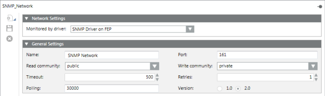

SNMP Connectivity
Simple Network Management Protocol (SNMP) is an Internet protocol typically used to manage devices on an Internet Protocol (IP) network. You can set up the monitoring of SNMP-capable devices connected to the Desigo CC stations.
SNMP Driver and SNMP Network
Before you can configure the SNMP network and its devices (or individual property), you must add the SNMP driver and then start the SNMP driver (or simulator), otherwise you cannot associate the SNMP Object ID (OID) to the Desigo CC properties. For instructions, see Configuring the SNMP Connectivity.
Typically, after adding the SNMP driver you will start the simulator to complete the SNMP configuration. Then, when the configuration is finished, you will stop the simulator and start the real driver.

- You must add the SNMP driver under the Desigo CC server or under a FEP station in System Browser. The driver can be the same as the one used for other monitoring tasks.
- You can safely share the same SNMP driver up to its maximum load. For more details on system limits, refer to the relevant subsystem integration guide.

An SNMP driver can monitor a maximum of 255 SNMP agents.
- When you select the driver object in the System Browser tree, the Extended Operation tab displays its Manager Status:
Stopped:The driver is not running. You can click Start to start the driver with a full connection to the field, or Start Conf... to start the driver without a field connection, for configuration purposes.Configuration Mode:The driver was started with Start Conf… and is running properly, but without a field connection. This mode lets you continue configuring the network (for example, importing devices, and so on). When you are ready to establish a connection to the field devices, you must Stop the driver and then start it again with Start.Started:The driver was started with Start and is running properly, with a full connection to the field. You can click Stop to stop it.Failed:The driver was started with Start or Start Conf… but there is no connection to the Server or FEP station (for example, a station cannot be reached or is disconnected). You can stop the driver and then try to start it again.- When the Manager Status is
Failed, you cannot make changes to the configuration (for example, import operations are not allowed). - It is not possible to Stop the driver during import operations.
- If the device hosting the driver is disconnected, the Manager Status becomes
Failed, and an alarm is generated (the device state becomesNot Reachable). - If a driver is running you must stop it before you can make changes to its configuration (for example, moving the driver configuration from a FEP station to the Desigo CC server).
- If you have already imported any SNMP devices (or an individual property) under an SNMP network, once the network driver is set, you cannot change it (the field is read-only). In this situation, if you need to modify the driver, you must first delete the SNMP network and start again with its configuration.
- While saving, a message box informs you if the network name is missing or the name you have chosen is already in use. In this case, modify the network name and save.